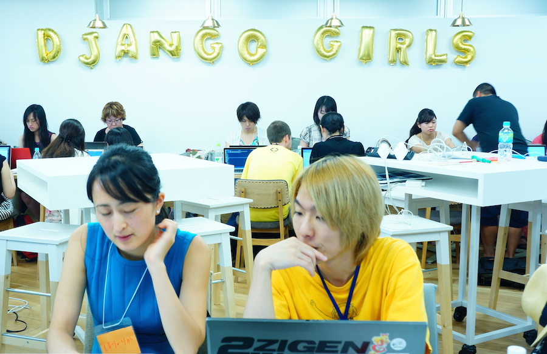

これはGeek Women Advent Calendar 20日目の記事です。
（すみません。おくれました。）
Django Girls って？
女性にもっとプログラミングを楽しんでほしい。という想いで初心者向けの1Dyaワークショップを開催しています。
ワークショップでは、小さいグループをつくり、プログラマとして活躍するコーチやメンターに教えてもらいながら、プログラミングの基礎を学んでいきます。HTML、CSS、Python、そしてDjangoを学んで、はじめてのWebアプリケーションを一緒に作ります。このワークショップは、2014年にベルリンで開催以来、世界各都市で開催されています。
Django Girls Japanは、そのワークショップを中心とした国内のコミュニティーです。
その日本初のDjango Girlsワークショップがどうやってできたのか、書いておきたいと思います。

やることになった経緯
私は、都市計画やGIS（Geographic Information Science/System）をやっていて、
エンジニアじゃないけど、ちょいちょいプログラミングを一人でかじってみてた。
2014年頃。GISやるならPythonでしょ、って流れに乗っかって、Pythonをかじりはじめる。
2015年4月。Python勉強したら、GIS以外でも使えるんでしょ？フレームワーク？Django？なにそれ？
チュートリアルとかないんかなー？日本語で私にも分かるようなの、あんまりないなー。
英語で、いいかんじの発見！
ん、このチュートリアルを使ってワークショップやってるみたいだぞ。
たのしそー！！日本でもやりたーい！！
という流れでした。
仲間集め
Django Girlsが実現できたのは、なんといってもホントにいろんな人の協力のおかげです。
やりたーい！！ッて言ってみたら、いいね！って言ってくれる人たちがいて、
いろんな人が集まってくれました。いろんな人を紹介してもらいました。
"だ、大丈夫？！"と、いろんな方が心配してくれて、手を貸してくれました。
こうして、運営メンバーと、ワークショップ当日のコーチ＆メンターはじめ、
たくさんの仲間や協力者と出会うことができました。皆さんには感謝しかないです。
やりたいことは、とりあえずやりたいって言ってみること大事だと思いました。
それに賛同してくれる人がいたら、その声を聞きながらできることやっていく。
すると、独りよがりな「やりたい」にはならなくて、最初は私の「やりたい」だけだったけど、みんなで共有する目標になっていく。
それと、Pythonコミュニティーのすごい。
おそらくPythonに限らないことだろうけど、コミュニティーの結束や協力がすごい。
（いつも日程が合わなくて、Pythonの勉強会とかに行けてないのがつらい。行きたい、行きたい。）
チュートリアルを翻訳
まず、チュートリアルを翻訳しました。
翻訳できた！と思ったら、翻訳元がアップデートされ後戻りするとか、慣れない作業に苦戦。
翻訳作業のツールやコツがあるみたいで、次回はそれを導入してもっと効率的にやろう。
翻訳は複数人で作業して、Githubをつかって管理してました。
個人的には、Githubのいい練習になった。
みんなでGithubやる時のお作法みたいなのが、ちょっと分かってきた。
翻訳作業は、waffle.ioを使って、Githubのイシューに紐付けてチャプターごとにタスク管理。
Trello風だし、誰が何をしているか、何が終わったか、一目瞭然。わかりやすかった。
翻訳したいチャプターを自分で選んで、作業すると宣言。終わったら報告して、また次のチャプターをえらぶ。
自己申告制だから、みんな無理ない範囲でそれぞれのペースで協力できるのもよかったかな。
イベント準備
まずは、会場と日程調整。
快く会場提供を申し出てくれた方々に恵まれ、本当に助かりました。
本当にありがとうございました。
会場のデコレーションはしたい！風船かざりたい！ワクワクする会場作り。
スポンサー集め＆告知
一般社団法人PyConさんの力を借りて、
ConnpassでPaypal決済でスポンサー集めをしました。
個人の方でスポンサーしてくださる方もいて、びっくりしました。
応援してくれる方がいるんだなって、すごく嬉しかった。
告知もPyLadiesさんの協力を得てConnpassで実施。
けっこうすぐ埋まりました。需要あってよかった。ホッとした瞬間。
ワークショップ当日
参加者は30名。コーチ＆メンターが13名。２～３人に1名のサポートがついて、チュートリアルにそって手を動かしながら、プログラミングを学んでみる。
海外出身者や、関西など地方からも参加してくれました。20～30代が多かったけど、40代、50代の方も。IT業界の方も、そうでない方も。
事前アンケートで確認しておいたプログラミングの経験レベルと、OS（Windows/Mac）から、あらかじめグループを作っておいて、
できるだけ同じOSを使っているコーチをあてるようにしました。
ランチは、ヘルシー思考の女の子やベジタリアンの子にも楽しんで欲しくて、マクロビのランチをオーダー。
おいしくて、ボリュームもしっかりあるから、参加者だけでなくコーチ男性陣にも満足してもらえたようです。
スイーツタイムもありました。休憩だけでなく、参加者同士がコミュニケーションをとる時間として、お菓子やお茶はやっぱり効果的です。
「これ（お茶）、どうぞ～」「美味しいですね～」なんて自然な会話が、声をかけるきっかけになります。
女性がスイーツタイムに求めるのは、お菓子そのものというより、自然なコミュニケーションなんだと思う。
出会いや会話も、ワークショップに参加する醍醐味。
ワークショップ後
スポンサーやコーチ＆メンターなど、お世話になった方に、翌日お礼メールとともにレポートを送付した。
素早くレポートをおこせるよう、当日のアンケート集計結果と、写真、最終的な決算を書き込めばいいように、事前に作っておいた。
事前にレポートの枠を作っておくと、絶対に撮り忘れたらいけない写真もわかる。忘れないうちに。
今後について
ワークショップはそれなりに労力もかかるので、頻繁にというわけにはいかないのが、現在の実状。
その中でも、無理ない範囲で継続的にコミュニティーとして活動をする必要があると思っている
１～2ヶ月に1度、Meetupや小さな勉強会は開いている。
その中で、女性やなにかしらマイノリティの立場に置かれている人たちが、参加しやすいイベントのあり方を
毎回トライアンドエラーで試しているところです。
そして、2016年は春すぎくらいに、第2回目のDjango Girlsワークショップ開催を目指しています。
（興味ある方は、こちらをチェックしておいてくださいね。）